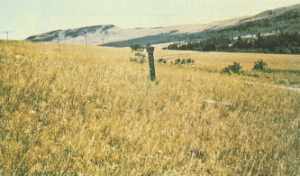
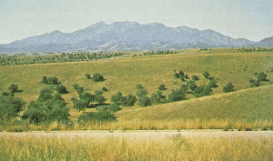
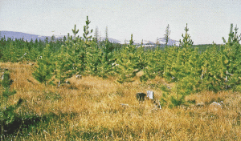

|
|
Fire Behavior Fuel Model 1 -- Short Grass |
Anderson (1982) classifies Fire Behavior Fuel Model 1 in the Grass Fuel Type and describes it as follows:
Fire spread is governed by the fine, very porous, and continuous herbaceous fuels that have cured or are nearly cured. Fires are surface fires that move rapidly through the cured grass and associated material. Very little shrub or timber is present, generally less than one-third of the area.
Grasslands and savanna are represented along with stubble, grass-tundra, and grass-shrub combinations that met the above area constraint. Annual and perennial grasses are included in this fuel model.
Anderson's (1982) photographs 1, 2, and 3 are examples of fuels fitting this model.
|  | Anderson (1982) Photo 1, Fire Behavior Fuel Model 1. Western annual grasses such as cheatgrass, medusahead ryegrass, and fescues. |
|  | Anderson (1982) Photo 2, Fire Behavior Fuel Model 1. Live oak savanna of the Southwest on the Coronado National Forest. |
|  | Anderson (1982) Photo 3, Fire Behavior Fuel Model 1. Open pine - grasslands on the Lewis and Clark National Forest, Montana, USA. |